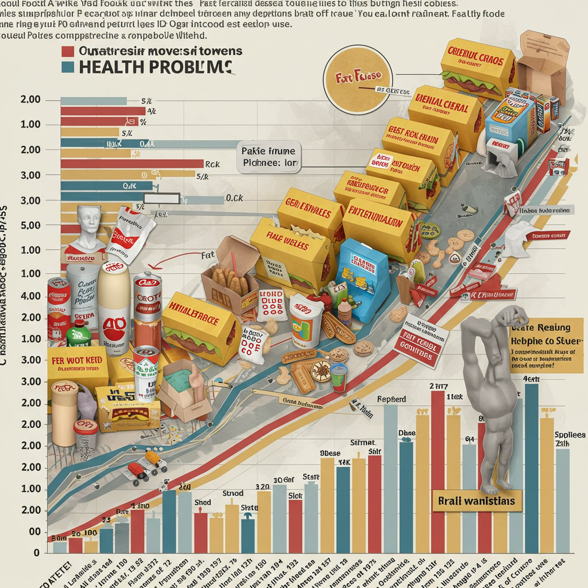
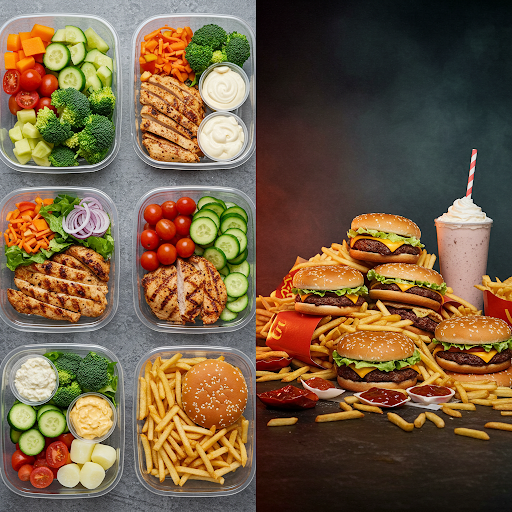

About Our Establishment
Welcome to our distinguished establishment. We've artfully combined the lightning-fast convenience of processed perfection with the soul-crushing ambiance of your neighborhood grill & bar. Why? Because America.™ Experience the Standard American Diet (SAD) in its most glorious, beige form.
Please wait to be seated. Your estimated wait time is: Forever. Much like the half-life of the preservatives currently circulating in your bloodstream.
The McDonaldBees Experience
Look, you're already here. You clicked the link. Maybe ironically, maybe not. At McDonaldBees, we offer:
- Unparalleled Mediocrity: We've perfected the art of being aggressively "fine". Just like how your body feels after decades of processed food—not exactly sick, but definitely not thriving.
- Caloric Density: Get the most calories for your dollar, and the least nutritional value! Efficiency! Our foods have been scientifically engineered to maximize profit per square inch of your expanding waistline.
- Judgment-Free Zone*: (*We are silently judging you, but the fluorescent lighting hides our expressions). Much like your body silently judges your food choices by developing chronic inflammation—no verbal critique needed!
- That Vague Feeling of Unease: Is it the food? The decor? Society? Yes. Is it also your liver struggling to process the 57 different synthetic compounds in your meal? Also yes!
- The Authentic American Experience: Where else can you get diabetes, heart disease, and chronic pain without even trying? It's the American Dream™!
"I came here ironically, but now my blood tests are unironic." — Actual Customer
The SAD Truth (From Real Scientists!)
— Totsch et al., 2020
Let's be real. You know this isn't food. We know this isn't food. But it's cheap, it's fast, and it fills the void... temporarily.
According to actual scientists (Totsch et al., 2020), even just weekend binges on a poor-quality diet (the SAD weekend) can:
- Prolong recovery from injury - Turns out your body doesn't have a "cheat day" mode!
- Dramatically alter your gut microbiome - Those little bugs in your gut hate this stuff as much as your dignity does!
- Increase inflammation - Like you needed MORE inflammation in 2024!
So, basically, it's not just your soul that's dying slowly. Enjoy your engineered edible product!
Weekend Special: The SAD Weekend Experience
Try our "SAD Weekend" package! Eat healthy Monday through Friday, then completely undo all that hard work with our weekend offerings! Science shows it's just as bad as eating garbage all week long!
— Totsch et al., 2020
Ask your server about our loyalty program. After ten visits, we'll pay for your first cardiologist appointment!
The Three-Generation Nutritional Collapse
We're proud participants in America's multi-generational dietary experiment! Watch as each generation gets:
Grandparents
Ate real food but started experimenting with TV dinners and fast food as "occasional treats"
Parents
Raised on breakfast cereals, lunchables, and boxed dinners as dietary staples
You
Have consumed more artificial colors, preservatives, and seed oils by age 10 than your grandparents did in their entire lifetime
Good news! Studies show that three generations of poor diet can permanently alter your genetic expression. So even if your great-grandchildren somehow manage to escape the McDonald's-Industrial Complex, they might still carry your metabolic damage! Talk about leaving a legacy!
The McDonaldBees Mobility Plan
Worried about actually walking to your table? No problem! Our dietary offerings have been carefully engineered to ensure that eventually, walking becomes strictly optional!
At McDonaldBees, we're proud to support the entire "food" to "mobility scooter" pipeline! It's the circle of life in America: Eat our food for decades, then spend your retirement fund on motorized assistance just to navigate the same restaurant!
— Totsch et al., 2020
Our Accessibility Promise
We promise that our doorways will always be wide enough to accommodate the very mobility issues our food creates! That's the McDonaldBees guarantee!
Remember: Today's Triple Baconator is tomorrow's Medicare-funded scooter. We call that "vertical integration."
The SAD Reality Check: Your Daily Poison Platter
Take a moment to look at what you've eaten today. Go ahead, we'll wait. Was it beige? Came in a box? Needed a microwave? Congratulations, you're participating in the greatest dietary experiment in human history!
— Totsch et al., 2020
What Sets The SAD Apart From Every Other Diet In Human History:
- Unprecedented Processing: Your great-grandparents wouldn't recognize 80% of what you eat as food. That's not progress, that's a horror movie.
- Engineered Addiction: Foods specifically designed to hit the "bliss point" of salt, sugar and fat. They literally engineer it to be impossible to stop eating. Like cigarettes, but with cheese.
- Inflammatory Ingredients: The average American consumes ingredients that their immune system treats as invaders, creating constant, low-grade inflammation throughout their entire body.
- Microbiome Massacre: Your gut bacteria—which control everything from your immune system to your mood—are being systematically exterminated by preservatives, emulsifiers, and lack of fiber.
What's Actually In Your Food:
The average processed food product contains ingredients that:
- Are banned in other developed countries
- Were originally developed as petroleum byproducts
- Have names you can't pronounce without a PhD in chemistry
- Have never been tested for long-term human consumption
- Were approved by regulatory bodies heavily influenced by the very companies producing them
— Totsch et al., 2020
The most tragic part? This is normal to you. You've been eating this way your whole life, surrounded by others doing the same, bombarded by advertisements convincing you it's fine, it's convenient, it's delicious!
But here's the kicker—your body doesn't care about convenience or marketing. Your cells don't know you were busy or tired. Your gut microbiome doesn't understand why you couldn't cook. Your immune system can't tell the difference between a pathogen and the chemical stew you've been feeding yourself daily.
Just remember: every time you choose "fast" over "food," you're trading minutes at the drive-thru for days in the doctor's office later.
The Absurdity Check: Food Comparisons That Will Depress You
The SAD isn't just a diet. It's a slow-motion catastrophe with a side of fries. But hey, at least the fries are unlimited.